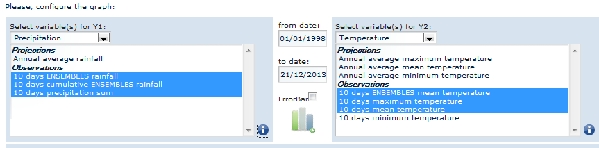

Graph configuration: dataset selection
Select from the first list a valid value as "Climate Indicator":

-
all: to load all available datasets;
-
specific value: to load all available datasets that belong to this "Climate indicator";
The "Dataset" list will be loaded with all raster and vector datasets available on the system that belongs to the specific "Climate indicator".
If one "Climate indicator" is chosen:
-
all: only one dataset can be choosen on the "Dataset list";
-
specific value: one or more datasets can be choosen on "Dataset list";
Use:
-
Ctrl key: to select/deselect "not consecutive" elements;
-
Shift key: to select/deselect "consecutive" elements;
Click on the info button to open a dialog to show more info about all the datasets selected:

As the creation of the graph may take some time, It is important to analyze the frequency and date interval for all datasets selected.
Graph configuration: right y axes
In order to add one or more datasets shown on the right Y axes,

select each dataset as described on the previous page on the right column:

Take care when you select multiple datasets on the same graph: the time coverage could be different, therefore time taken to create the graph could take a long time.